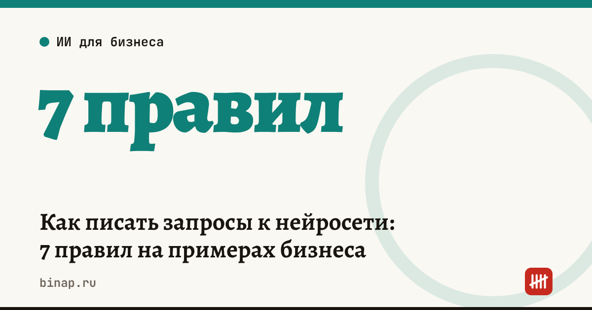

Как писать запросы к нейросети: 7 правил на примерах бизнеса

Нейросеть отвечает общими словами и выдумывает цифры не потому, что она «глупая», а потому, что ей не сказали, кто вы, что нужно на выходе и чего делать нельзя. Хороший запрос для бизнеса состоит из пяти частей: роль и контекст, задача, формат результата, ограничения и данные. Ниже — 7 правил с примерами, которые работают в GigaChat, YandexGPT, ChatGPT и других чат-ботах.
Коротко
- Дайте контекст: кто вы, что продаёте и кому — без этого ответ будет про «бизнес вообще».
- Описывайте результат: формат, длину, структуру, а не только тему.
- Пишите запреты прямо: «не придумывай цены», «не обещай скидки».
- Показывайте образец — один пример лучше трёх абзацев объяснений.
- Не отправляйте персональные данные клиентов и коммерческую тайну.
- Для сложных задач пусть нейросеть сначала задаст вопросы, а не пишет сразу.
- Проверяйте: просите показать расчёт и пометить, где данных не хватило.
Сроки, изменения и разборы для ИП и самозанятых — каждое утро в Telegram и MAX. Подпишитесь, чтобы не пропустить.
7 правил
1. Контекст: кто вы и для кого результат. Плохо: «Напиши текст для рассылки». Хорошо: «Мы — мебельная мастерская в Твери, делаем кухни на заказ от 250 000 ₽, клиенты — семьи 30–45 лет. Напиши письмо тем, кто оставил заявку и не ответил на звонок».
2. Результат: формат, длина, структура. «Ответ — таблица из трёх колонок», «письмо на 5–7 предложений», «список из 10 пунктов без вступления». Без этого нейросеть выберет формат сама — обычно длинный.
3. Запреты прямым текстом. «Не придумывай цены, сроки и характеристики: где данных нет, пиши [уточнить]». Это самое полезное правило для бизнеса: оно убирает большую часть выдуманных фактов.
4. Образец. Вставьте 1–2 своих удачных текста со словами «пиши в таком стиле». Тон, длину и манеру нейросеть повторит точнее, чем по описанию «дружелюбно, но по-деловому».
5. Данные — без персональных. Имена, телефоны, адреса и реквизиты клиентов замените на «Клиент 1». Не отправляйте пароли, коды из СМС, договоры с реквизитами и то, что вы считаете коммерческой тайной.
6. Пусть сначала спросит. Для КП, плана или стратегии попросите: «Не пиши текст. Задай мне 7 вопросов, без которых результат будет общим». По материалу vc.ru, глава GoDaddy Аман Бутани говорит, что ему важно видеть мысль самого сотрудника — наблюдение и гипотезу, а не текст, целиком написанный нейросетью. Вопросы как раз помогают вытащить вашу мысль.
7. Проверка в самом запросе. «Покажи расчёт по шагам», «отметь, в чём ты не уверен», «перечисли, каких данных не хватило». Цифры и выводы всё равно сверяйте сами.
Шаблон запроса
Скопируйте и заполните:
«Ты — [роль: помощник менеджера по продажам / редактор / аналитик] в компании [что делаем, для кого]. Задача: [что сделать]. Результат: [формат, длина, структура]. Нельзя: [что не придумывать и не обещать]. Образец: [пример]. Данные: [ваши цифры и факты без персональных данных]. Если данных не хватает — сначала задай вопросы».
Было и стало
| Задача | Плохой запрос | Хороший запрос |
|---|---|---|
| Ответ на отзыв | «Ответь на отзыв» | «Ответь на отзыв на «вы», 2–3 предложения, не обещай компенсаций, предложи написать в поддержку» |
| Карточка товара | «Опиши плед» | «Опиши плед по характеристикам из списка, до 600 знаков, ничего не добавляй от себя» |
| Расчёт | «Посчитай наценку» | «Цена закупки 400 ₽, продажи 700 ₽. Посчитай наценку и маржу в процентах, покажи формулы» |
В последнем примере правильный ответ — наценка 75% (300 ÷ 400) и маржа около 43% (300 ÷ 700). Наценку считают от закупки, маржу — от цены продажи: если нейросеть их перепутала, это видно сразу.
Готовые инструкции, собранные по этим правилам, — в разделе 10 готовых ИИ-агентов для бизнеса. Какие задачи отдать нейросети в первую очередь — в статье ИИ для малого бизнеса: 10 задач, а как понять, окупается ли платный сервис, — в разборе нейросеть для отдела продаж.
Частые вопросы
Нужно ли писать запросы на английском? Нет. Современные нейросети хорошо понимают русский; важнее структура запроса, чем язык.
Почему нейросеть всё равно выдумывает? Если в запросе нет данных, она заполняет пробел правдоподобным текстом. Запрет «не придумывай» и пометка [уточнить] сильно снижают это, но проверка остаётся за вами.
Сохранять ли удачные запросы? Да: соберите 5–10 запросов под свои задачи в отдельный файл — это и есть ваша база «агентов».